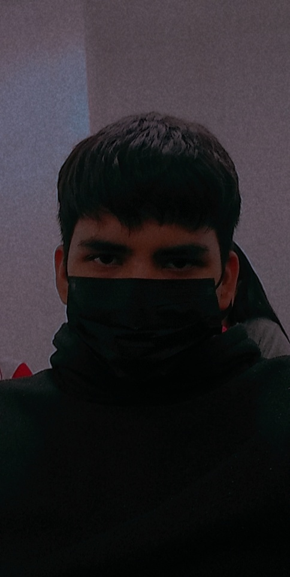

Mi nombre es Jose Raul Garcia Alvarez, naci el 5 de junio del 2005 y actualmente tengo 17 años,
ahora estudio en la Universidad Tamaulipeca del campus de Rio Bravo en la carrera de bachillerato en programacion
mi familia esta conformada por mi padre: Raul Garcia Reyes
mi madre: Aleyda Alvarez Rivera
y mi hermanito: Santiago Apolinar Garcia Alvarez.
Yo soy nacido de Matamoros, Tamaulipas. Pero actualmente vivo en Rio Bravo, Tamaulipas
no eh tenido un lugar fijo en donde quedarme desde chico siempre eh andado como los nomadas de pueblo en pueblo, eh tenido 2 preescolares
y 3 primarias esto ha tenido varias ventajas ya que me puedo adaptar a cualquier entorno facilmente
pero si es dificil dejar todo o lo poco que has construido y empezar otra construccion desde 0, hacer amistades, acoplarse a la vida y cosas asi...
actualmente estoy pensando en mi futuro, me gustan las matematicas y los numeros, mi sueño o lo que yo quiero ser es tal vez economista o contador
es algo que le tenrdia pasion y si le pondria mi esfuerzo.
si esto lo llega a ver mi yo del futuro solo quiero decir que si, si se pudo, aun no termina la vida tu puedes mas<3